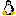

Sailor Moon Tutorial
Lesson 3. Copy Objects to New Pages of a Set
-
We will now create a second page in our data set and import a new costume for
our doll. If you are continuing from lesson 2 you can skip to step
3. Otherwise, ensure that UltraKiss is showing the main logo
screen. Close any existing set. If you want to ensure that your new KiSS set
is created to be compatible with other viewers, press one of the viewer compatibility
preset buttons on the toolbar

or use Tools-Options-Compatibility to set a compatibility preset.
-
Use File-Open to load the configuration file
CNF2.cnf from the Tutorial/Sailor Moon directory or the directory
you used in lesson 2. This will load the Sailor Moon KiSS set that you created
in exercise 2.
-
Use Edit-Select All, or place the mouse pointer
to the upper left of the doll, hold the alt key down, and drag a selection box
around the doll. When the mouse button is released all objects including
the doll should be selected. Every selected object will have a blue
bounding box around it.
-
Use Edit-Copy to copy all selected objects to the
clipboard.
-
Use Edit-Add Page command to create a new
page. This should be page 1. This new page is initially empty and
the screen should be white.
-
Use Edit-Paste to paste the copied objects into
page 1. The objects should be positioned correctly based upon their
positions when they were copied to the clipboard.
-
Use File-Save As to save your work. Change
the configuration file name to CNF3.cnf.
-
Use Edit-Import Image to New Object and import the
image files cat.gif, leftshoe.gif,
rightshoe.gif, skirt.gif
and shirt.gif from the Tutorial/Sailor Moon
directory into page 1. You can import these images all
at once if you hold the ctrl key down and make multiple selections.
Position these objects appropriately beside the doll.
-
Use Edit-Write Page to set the initial positions
for the new imported objects after you have moved them to their final
location. Once the initial positions are set a View-Reset
command will always restore the objects to these positions.
- You can use Edit-Unselect All to remove the selection boxes from the images to stop editing so you can play with your set. Or, simply right-click with your mouse pointer while it is not over an object.
-
Use File-Save to save your work. The new
imported images and all changes to your configuration CNF3 will be saved in
your directory.
Next Document: Sailor Moon Lesson 4
Prior Document: Sailor Moon Lesson 2
Copyright (c) 2002-2023 William Miles